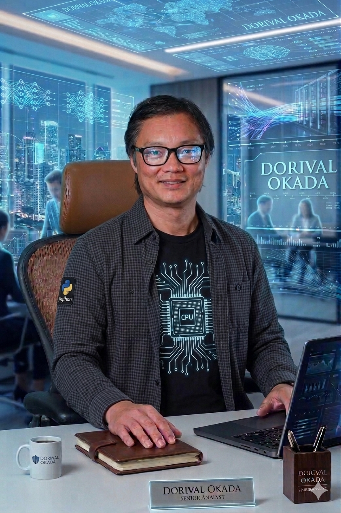

1990 - O Despertar Lógico
Início com TK90X e BASIC. Programação raiz onde cada byte contava.
26 anos em Telecom. Mais de 30 anos inovando, aprendendo e construindo — do BASIC à IA.
Pioneiro Digital e Arquiteto da Tecnologia. Unindo a robustez de décadas de hardware com a agilidade da Inteligência Artificial e Front-end moderno.

Início com TK90X e BASIC. Programação raiz onde cada byte contava.
Eletrotécnica na GV: Imersão em Elétrica, Mecânica e Eletrônica. A base do "saber como funciona".
Desenvolvimento e cálculo de indutores e transformadores de pequeno porte. Domínio físico da eletrônica de potência e sinais.
26 anos liderando infraestruturas críticas, normas Anatel e ISO 9001. Especialista em qualidade e homologação de hardware.
Aprofundamento científico em Algoritmos, Estrutura de Dados e Arquitetura de Sistemas. A base teórica que sustenta minha capacidade de solução de problemas complexos.
Continuando a era Telecom Anatel e ISO 9001. Conhecimento na cultura Startup ,em inovação e desenvolvimento de soluções tecnológicas .Marcas e patentes no INPI
Transição estratégica para IA Generativa e Front-end (Alura). Unindo décadas de hardware com a agilidade do software moderno.
Especialista em Inteligencia Artificial - N1 (2026)
No meu canal DoriVox, compartilho experimentos na fronteira da tecnologia, com foco em IA Generativa aplicada à música e audiovisual.
Mais do que teoria, é onde aplico o conhecimento da Alura e minha base em Computação para criar o novo.
Visitar Canal DoriVoxNo meu canal Dj-Dvox, compartilho experimentos na fronteira da tecnologia, com foco em IA Generativa aplicada à música eletrônica.
Mais do que teoria, é onde aplico o conhecimento da Alura e minha base em Computação para criar o novo.
Visitar Canal Dj-DvoxNo meu canal CloudCandyWorld, projeto focado em experimentação de vídeo e imagem generativa, utilizando ferramentas de ponta para criação de narrativas visuais e engajamento em plataformas digitais.
Mais do que teoria, é onde aplico o conhecimento da Alura e minha base em Computação para criar o novo.
Visitar Canal CloudCandyWorldONIGEEK é um onigiri vivo, fruto da fusão entre tecnologia de ponta e energia demoníaca antiga.
Um laboratório de Storytelling com IA, onde produzo episódios, trailers e animações originais.
Visitar Canal ONIGEEKNo meu canal DOK Signal, compartilho experimentos na fronteira da tecnologia, com foco em exploração de sonoridades synthwave e horror dos anos 80, recriadas através de modelos de IA generativa.
Mais do que teoria, é onde aplico o conhecimento da Alura e minha base em Computação para criar o novo.
Visitar Canal DOK SignalFront-end & AI Immersion
Plataforma de streaming personalizada desenvolvida durante a imersão da Alura. O projeto foca em uma interface responsiva e intuitiva, aplicando conceitos avançados de HTML, CSS e lógica de programação.
AI-Driven Development (Lovable)
Exploração de interfaces imersivas utilizando IA Generativa de Código. Este projeto demonstra a capacidade de transformar conceitos complexos em interfaces funcionais em tempo real, utilizando ferramentas de ponta como Lovable, Cursor e Tailwind CSS.